To sort out before you leave
The ESTA travel authorisation is compulsory for French citizens, under the Visa Waiver Program, and for many other nationalities. You apply online, you pay for it, and it is valid for two years. Do it several days before you leave, not the day before. Check the rules for your own nationality.
A valid biometric passport, of course. And health insurance: medical care in the United States is among the most expensive in the world, an emergency room visit runs into thousands of euros.
As for paying, cards are accepted everywhere, often contactless. Cash is hardly used any more, except for some tips.
When to go
Spring and autumn are the best seasons. Mild temperatures, low light in the avenues, and the parks at their most beautiful.
Summer is hot and muggy, with a subway that is hard to bear at rush hour. Winter is cold and windy, but the city is spectacular in December.
Two periods are very expensive for accommodation: the end of year holidays and Thanksgiving.
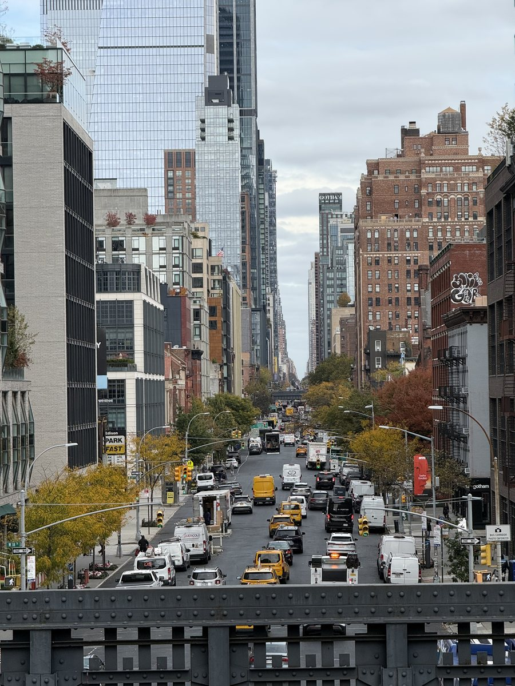
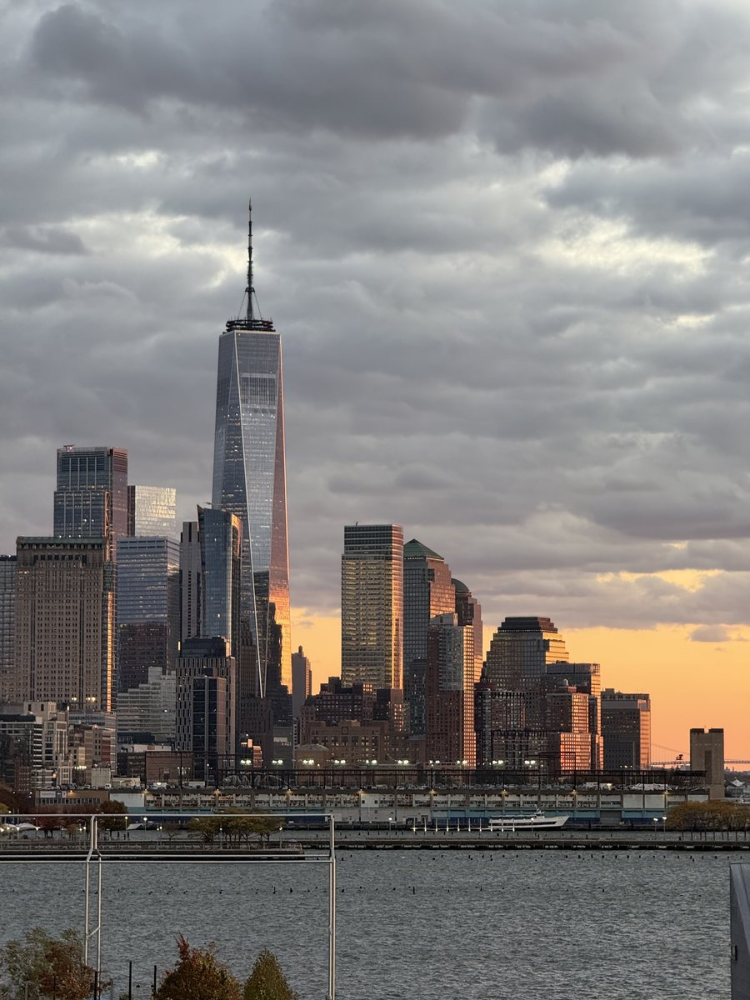
À compléter : la période de notre séjour et la météo qu'on a eue.
The itinerary, day by day
The idea: one neighbourhood a day, on foot, and the subway only to change areas. New York is a walking city, that is how you see it.
- MidtownTimes Square, Fifth Avenue and the Empire State
- DowntownThe memorial, Wall Street and the Brooklyn Bridge
- Central ParkThe park and the great museums around it
- BrooklynDumbo, Williamsburg and the best food
- Uptown and HarlemResidential streets and room to breathe
- Your choiceThe High Line, the Village, Coney Island or more museums
Midtown
Times Square, Fifth Avenue, Bryant Park, Grand Central and the Empire State Building. It is postcard New York, dense and noisy, to do once and then leave.
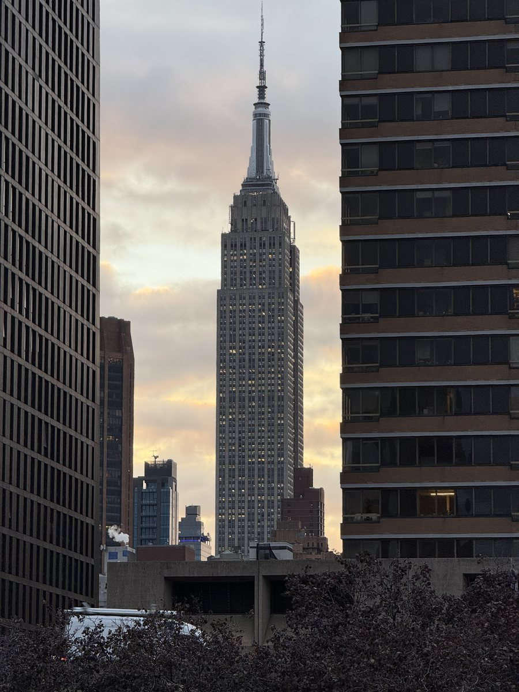
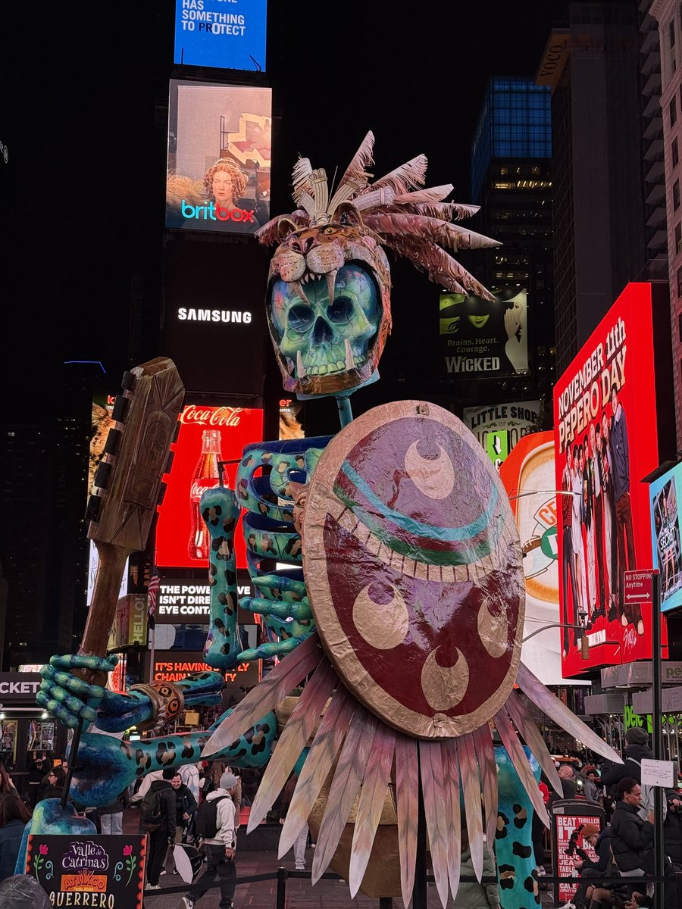
Downtown and the Brooklyn Bridge
Lower Manhattan: the 9/11 memorial, One World, Wall Street, then crossing the Brooklyn Bridge on foot, ideally late in the day with the skyline behind you.
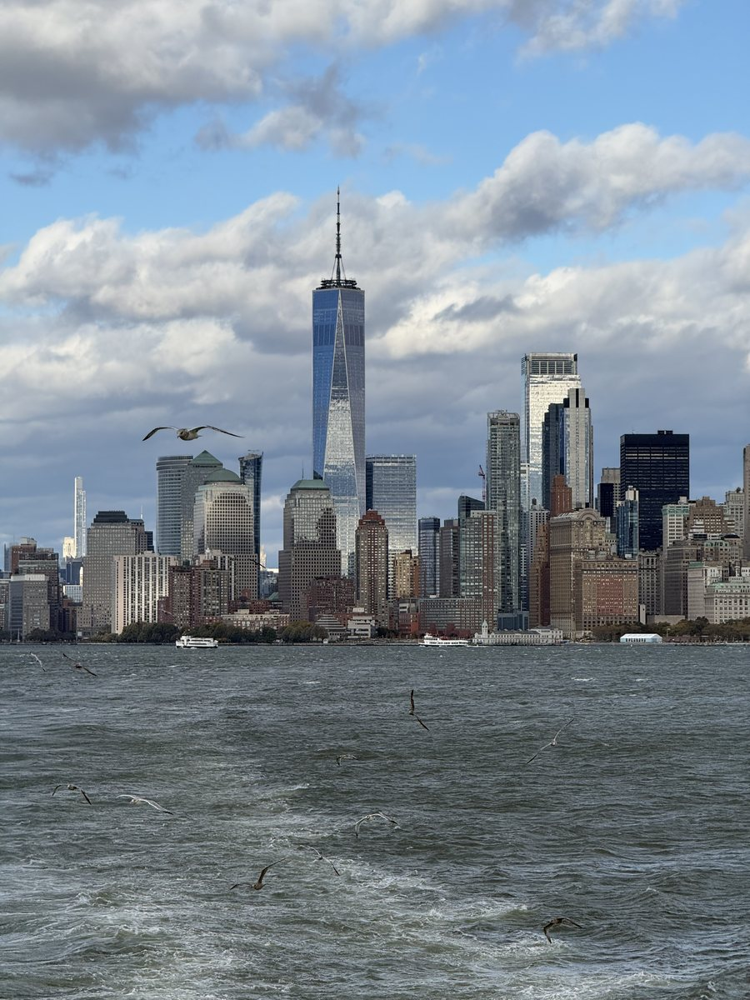
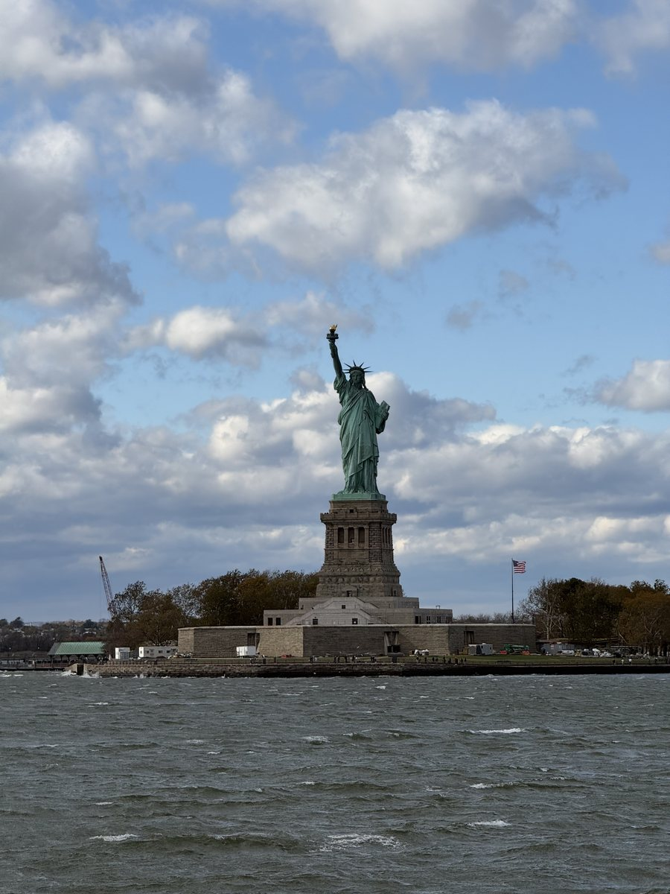
Central Park and the museums
The park is four kilometres long, and you can easily cross it in a morning. The great museums line it: the Metropolitan, the Natural History Museum, and MoMA a little further south.
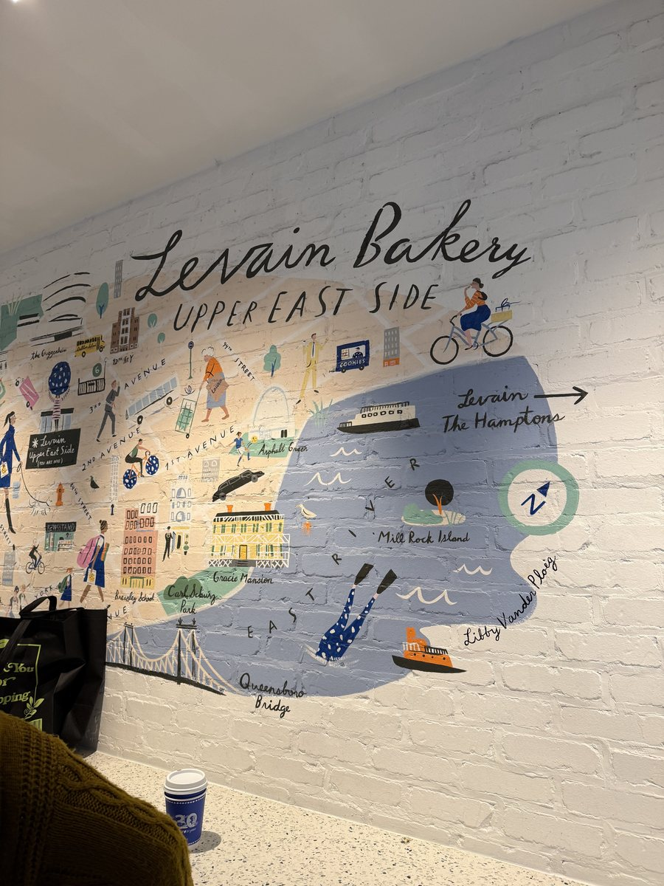
Brooklyn
Dumbo for the view of the bridges, Williamsburg for the atmosphere and the rooftops. It is also where the food is most interesting and the prices a little less crazy.
Uptown and Harlem
The Upper West Side, the Upper East Side and Harlem further north. A different pace, residential streets, brownstones and real room to breathe after Midtown.
The remaining days
Depending on what you feel like: the High Line, Greenwich Village, Chelsea Market, Coney Island at the end of the subway line, or a second helping of museums.
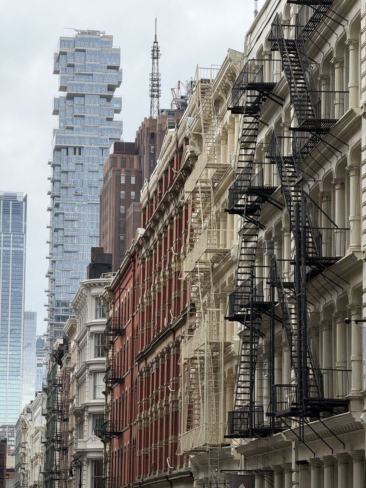
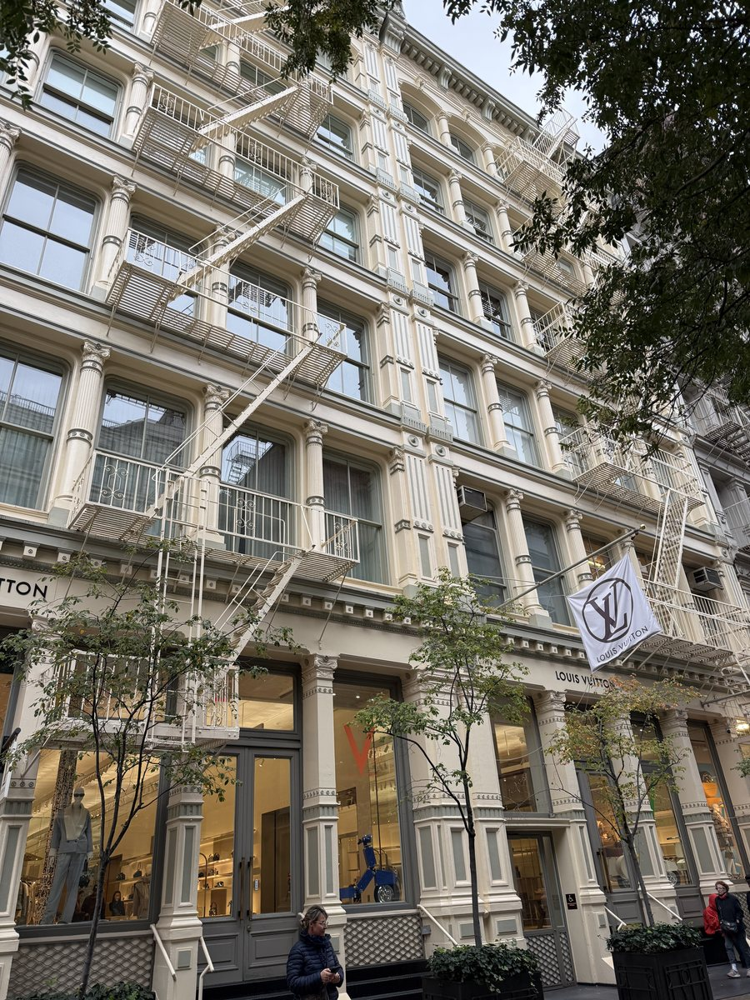
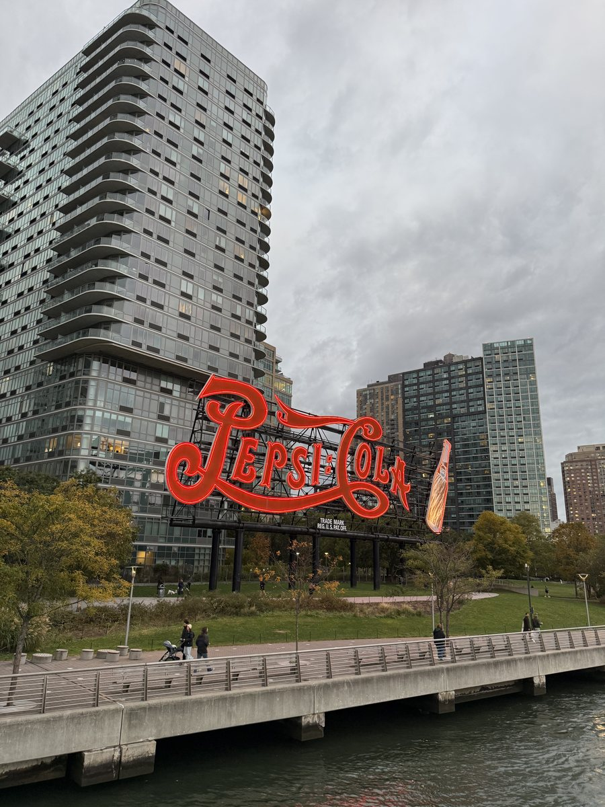
À compléter : notre découpage réel jour par jour, et ce qu'on referait autrement.
The subway and getting around
The subway runs twenty four hours a day, which hardly exists anywhere else. It is by far the most efficient way to cross the city.
You pay directly with a contactless bank card or a phone, by holding it to the reader at the turnstile. No need to buy a transit card any more.
The system automatically caps the weekly amount: after twelve rides within a rolling seven days, the next ones are free. The cap is about 31 € a week since January 2026, or 35 dollars on the spot. The only condition is to always use the same card or the same phone.
Something many guides have not updated: the old weekly and monthly MetroCard passes were scrapped in January 2026. There is nothing to buy in advance any more, the cap applies on its own.
What the cap covers besides the subway and buses: the Roosevelt Island Tramway. It counts as a subway ride, so it costs nothing extra once you have hit the cap. It is probably the best view of the city, at no extra cost.
From the airports, an airport train links the terminals to the network. It is much cheaper than a taxi, and often faster at rush hour.
The budget
New York is expensive, and two things push the bill up compared to the displayed prices.
First, sales tax, which is not included in shelf prices. What you see is never what you pay.
Then the tip, expected in restaurants and bars, around twenty percent. It is not optional in the local culture, wages in the sector depend on it.
Accommodation is the biggest cost, by far. Brooklyn, Queens or the New Jersey riverside let you cut the bill, at the cost of a few subway stops.
For sightseeing, tourist passes bundle several attractions at a reduced price. They pay off from three or four paid entries, not below.
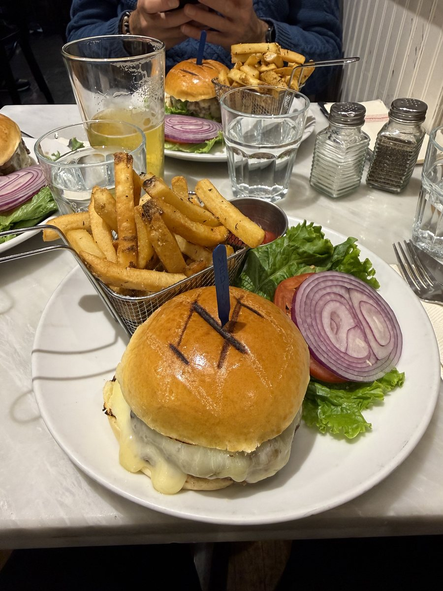
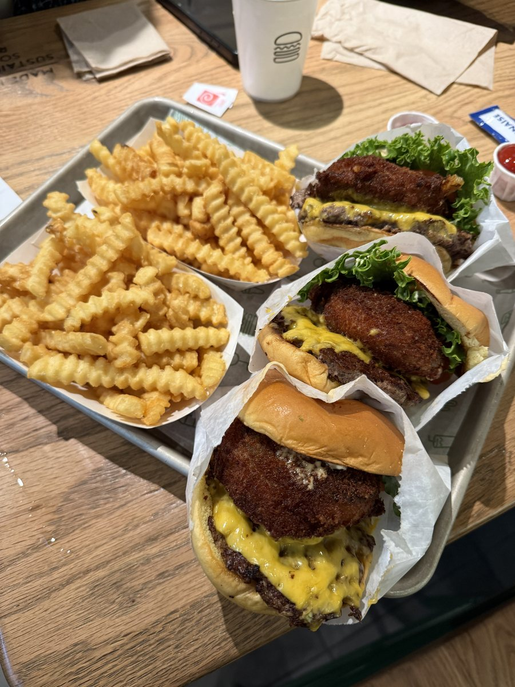
À compléter : notre budget réel, logement, restaurants et visites.
The viewpoints
The city has four main ones, and they are not equal depending on what you are looking for.
The Empire State Building is the most iconic, but it has one flaw: from the top, you cannot see it.
Top of the Rock has the Empire State in the frame, with Central Park on the other side. It is the best compromise if you only go up once.
The two newest ones, one at Hudson Yards and the other above Grand Central, go for the experience and mirror effects. Spectacular, very busy, and expensive.
And there is the free option: the Staten Island Ferry, which passes the Statue of Liberty without costing a cent.
But my favourite is somewhere else, and it costs about 4 €. It is the NYC Ferry, on the East River, between Manhattan and Brooklyn. Tickets are bought on the NYC Ferry app.
It is not a tourist boat. It is how New Yorkers get around, and that changes everything: you are on the water with people coming home from work, not with a guide on a microphone.
My route, and I recommend it at sunset: get to Roosevelt Island from Manhattan by tramway, then take the boat down to Wall Street. It also works the other way. Since the tramway counts as a subway ride, the whole thing comes to about 4 €, or 4.50 dollars on the spot.
Running in New York
It is one of the best cities in the world for it, and it completely changes the way you visit.
The Central Park loop is about ten kilometres, with some hills in the north. Early in the morning, it is full of New York runners and empty of tourists.
Along the Hudson, the path runs for kilometres by the river, flat and open, with a view of New Jersey.
You can run across the Brooklyn Bridge too, but early: after nine o'clock, the walkway is packed.
And if you are aiming for the race itself, the New York City Marathon takes place in November and crosses all five boroughs. Entry is by ballot, a long time in advance.
For gear, my running page (in French) gathers, step by step, the equipment I really use.

Mistakes to avoid
Trying to see everything. Seven days are not enough, and rushing from one place to the next ruins exactly what makes the city.
Booking a hotel right in Midtown to be central. It is the most expensive, noisiest neighbourhood, and the least pleasant to come back to in the evening.
Forgetting tax and tips in the budget. Between the two, a bill comes to almost a third more than the price on the menu.
Taking a taxi from the airport at rush hour. The airport train costs a fraction of the price and is never stuck in traffic.
À compléter : ce qu'on a raté, mal préparé ou payé trop cher.
Shall we plan your trip together?
This guide gives you the outline. If you want to go further, I build your itinerary with you: the route stage by stage, where to stay, the journeys between towns and the activities that are really worth the day.
We start from your dates, your budget and what you want to experience. You leave with a plan that is ready to follow, knowing what to book in advance and what can wait until you get there.
Three packages, from 59 € for feedback on your plan to 249 € for the full itinerary. The first chat is free, with no commitment.
The links and gear mentioned
The booking platforms, eSIMs, banks and insurance I use when I travel are all on one page, with my referral codes.
Page checked and updated on .